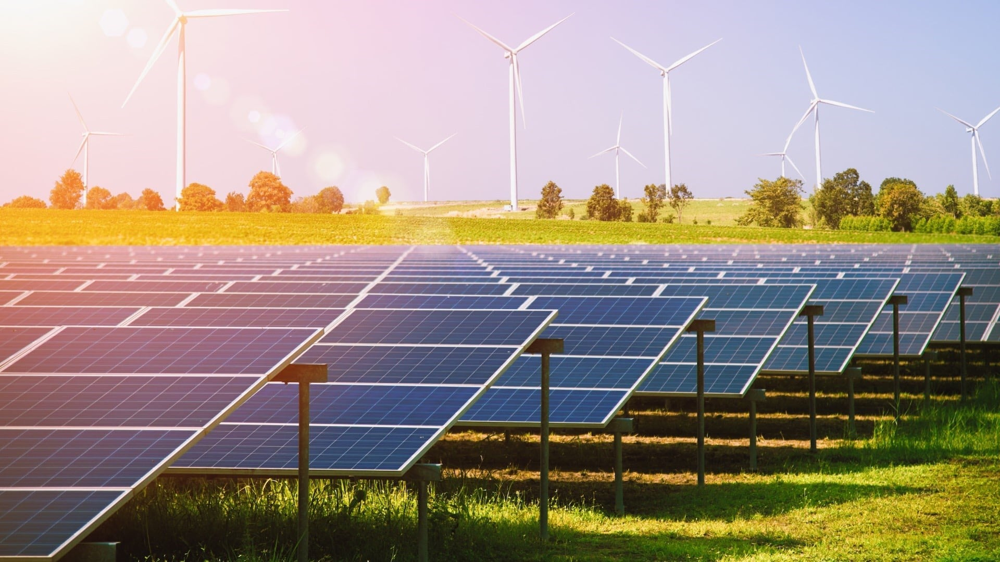

Megújuló Energia és Személyes Bemutatkozás
Üdvözöllek a portfólió oldalamon! Tar Levente vagyok, Budapesti Műszaki Egyetem hallgatója, aki szenvedélyesen érdeklődik a megújuló energiaforrások iránt. Már fiatal koromtól fogva foglalkoztatott a környezetvédelem és a technológia kapcsolata, ezért döntöttem úgy, hogy karrieremet ezen a területen építem.
Fő érdeklődési területem a napenergia és a szélenergia, de emellett a geotermikus energia és az energiahatékonyság javítása is különösen fontos számomra. Célom, hogy hozzájáruljak egy fenntarthatóbb jövő kialakításához, és olyan innovatív megoldások kidolgozásán dolgozzak, amelyek csökkentik a környezetre gyakorolt negatív hatásokat.
Tanulmányaim során számos projektben vettem részt, ahol lehetőségem volt gyakorlati tapasztalatot szerezni a megújuló energiaforrások alkalmazásában. Emellett fontosnak tartom a folyamatos fejlődést és új technológiák megismerését, ezért aktívan követem az iparági trendeket és kutatási eredményeket.
Kreatív gondolkodásomnak és problémamegoldó képességemnek köszönhetően képes vagyok hatékony megoldásokat találni különféle kihívásokra. Csapatmunkában is szívesen dolgozom, hiszen hiszem, hogy a legjobb eredmények együttműködés révén érhetők el. Német nyelvtudásom révén pedig nemzetközi projektekben is részt tudok venni, ami tovább bővíti a látókörömet.
Szeretném a jövőben továbbfejleszteni tudásomat és készségeimet ezen a gyorsan fejlődő területen, és remélem, hogy egy nap egy zöldebb, tisztább világ kialakításához is hozzájárulhatok.
Készségeim
A tanulmányaim és gyakorlati tapasztalataim során számos készséget sajátítottam el, amelyek mind a megújuló energia, mind más területeken segítenek előrehaladni. Ezek közé tartoznak a következők:
- Nyelvtudás: B2 német – A német nyelvtudásom lehetővé teszi, hogy nemzetközi projekteken dolgozzak, és könnyedén kommunikáljak külföldi partnerekkel. Fontosnak tartom, hogy a globális iparágakban helytálljak, ezért folyamatosan fejlesztem nyelvtudásomat.
- Kommunikáció – Hatékony kommunikációs készségeim révén képes vagyok komplex technológiai és tudományos információkat közérthetően átadni, legyen szó csapatmunkáról, prezentációkról vagy ügyfelekkel való kapcsolattartásról. Az írásbeli és szóbeli kommunikáció egyaránt erősségem.
- Előadókészség – Rendszeresen tartok előadásokat és prezentációkat az egyetemi projektekről és kutatásokról. Képes vagyok a közönséget bevonni, és a témákat érdekfeszítően, jól strukturáltan bemutatni. Ez a készség különösen hasznos, amikor szakmai konferenciákon, versenyeken vagy más nyilvános szereplések alkalmával mutatom be a munkám eredményeit.
- Problémamegoldás – Gyorsan és hatékonyan találok megoldásokat bonyolult technikai vagy szervezeti kihívásokra. Képességem van arra, hogy több szempontból is megvizsgáljam a problémákat, és kreatív, fenntartható megoldásokat dolgozzak ki, különösen az energiahatékonyság és a környezetvédelem terén.
- Kreatív gondolkodás – Nyitott vagyok az új ötletekre és innovatív megoldásokra, különösen a megújuló energiaforrások fejlesztése során. Szívesen kísérletezem új technológiákkal és módszerekkel, amelyek segíthetnek csökkenteni az energiafelhasználást és a szénlábnyomot.
- Együttműködés – Csapatban is kiválóan dolgozom, és szívesen veszek részt olyan projektekben, ahol a közös cél érdekében mindenki a legjobbját nyújtja. Képes vagyok másokkal együtt ötletelni, és hozzájárulni a közös sikerhez, akár vezető szerepben, akár csapattagként.
Tanulmányok
- 2012-2020: Apáczai Csere János Általános és AMI
- 2020-2024: Nyíregyházi Kossuth Lajos Evangélikus Gimnázium
- 2024- : Budapesti Műszaki Egyetem
Kapcsolat
Email: tar.levente.hu@gmail.com
Telefon: 06206783625
Facebook: facebook.com
Napelem és Megújuló Energia
A napelemek tiszta, fenntartható energiaforrást biztosítanak, amelyek segítenek csökkenteni a szén-dioxid-kibocsátást és hozzájárulnak a környezetvédelemhez.
